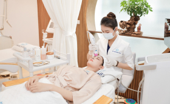

Intensive Care
Khám và chăm sóc da chuyên sâu
11 bước 90 phút
cho làm da mịn màng căng bóng
11 bước
90 phút
cho làm da mịn màng căng bóng

 01
01
Tẩy trang
02
Rửa mặt bằng SRM phù hợp với từng tuýp da
03
Tẩy TBC enzyme sinh học
07
Đi các lớp trị liệu chuyên sâu theo từng gói (đối với mỗi gói bước
này có thể có từ 2-5 công đoạn khác nhau)
06
Đẩy oxy tươi , trực tiếp cung cấp oxy tới hệ thống mao mạch dưới da,
tăng quá trình trao đổi chất, thay mới tế bào, và giúp da hồng hào
05
Phun sương nước, giúp cân bằng độ pH trên da
04
Chạy đầu Scrubber sóng siêu âm cao tần giúp làm sạch sâu, loại bỏ
bít tắc nang lông
08
Đắp mặt nạ
09
Điện di tinh chất điều trị
10
Sử dụng serum điều trị phù hợp
11
Bôi kem chống nắng
Đặc điểm nổi bật
Kỹ thuật
Khách hàng sẽ được khám và soi da bằng máy VISIA 8 chỉ số: brown
spot, wrinkle, red area, spots, pore, porphyrin, uv spots, texture
giúp phân tích chính xác tình trạng của da.

Kỹ thuật
Khách hàng sẽ được khám và soi da bằng máy VISIA 8 chỉ số: brown
spot, wrinkle, red area, spots, pore, porphyrin, uv spots, texture
giúp phân tích chính xác tình trạng của da.
Kỹ thuật
Khách hàng sẽ được khám và soi da bằng máy VISIA 8 chỉ số: brown
spot, wrinkle, red area, spots, pore, porphyrin, uv spots, texture
giúp phân tích chính xác tình trạng của da.
Kỹ thuật
Khách hàng sẽ được khám và soi da bằng máy VISIA 8 chỉ số: brown
spot, wrinkle, red area, spots, pore, porphyrin, uv spots, texture
giúp phân tích chính xác tình trạng của da.
Kỹ thuật
Khách hàng sẽ được khám và soi da bằng máy VISIA 8 chỉ số: brown
spot, wrinkle, red area, spots, pore, porphyrin, uv spots, texture
giúp phân tích chính xác tình trạng của da.
Kỹ thuật
Khách hàng sẽ được khám và soi da bằng máy VISIA 8 chỉ số: brown
spot, wrinkle, red area, spots, pore, porphyrin, uv spots, texture
giúp phân tích chính xác tình trạng của da.